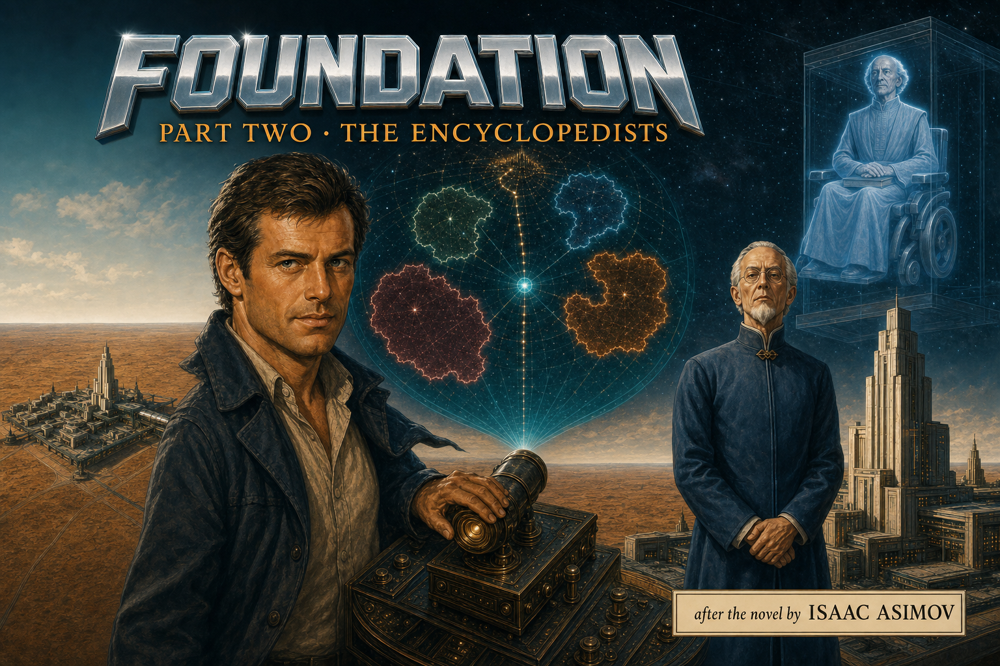

Shared foundation
- Terminus is an isolated settlement founded under Hari Seldon's Plan.
- Anacreon becomes the immediate external threat.
- A Seldon recording marks a predicted crisis.
- Salvor Hardin becomes central to the colony's survival.

Afterword
Terminus survives its first crisis because Salvor Hardin understands what the neighboring kingdoms can still own—and what they can no longer maintain.
Imperial collapse does not begin with every city burning at once. It appears first as missing routes, missing replacement parts, missing protection, and missing expertise. On Terminus, a stopped metal shipment matters more than a new royal title because the shipment reveals which connections have already ceased to function.
Lord Rodric still commands ships, but his surprise at Terminus's plutonium power reveals that Anacreon has inherited atomic machines without preserving the science behind them. Lord Dorwin still carries the Empire's titles and treaties, but his elegant promises produce no ship, force, or decision. Less capability has hardened into policy.
Seldon's Plan does not hand Hardin a list of instructions. Instead, it creates conditions that narrow the crisis until one political balance becomes workable. The Foundation's knowledge is not yet military strength, but it is something all four kingdoms need—and therefore something none of them can allow one rival to control alone.
Why no battle? Smyrno, Konom, and Daribow force Anacreon to withdraw because an Anacreonian monopoly on Terminus's atomic skill would unbalance the entire region. The Foundation survives through dependency and balance—not through a fleet it does not have.
Book & screen · spoiler-light
This volume follows Asimov's first crisis on Terminus. Apple TV+'s series uses several of the same names and premises, but builds a different chain of events around them.
This note avoids later plot developments in both the books and the television series.
Comprehension
Yes. The title describes a claim; the missing shipment reveals that Terminus's physical supply network is already controlled by its neighbors.
Terminus depends on imported metal. The interrupted route is material proof that Imperial labels no longer protect that dependence.
Yes. Hardin's obsolete fuel was a diagnostic test: Rodric recognized atomic prestige, not atomic practice.
Anacreon still has atomic equipment. The revealing fact is that its envoy cannot identify technology Terminus already considers obsolete.
Yes. Hardin's analysis separates diplomatic language from usable capability; the Empire promises a status it cannot enforce.
The failure is practical, not textual. Dorwin's words commit no force and produce no protection.
Yes. The Plan works by shaping mass conditions, not by giving individuals a prophecy they can outmaneuver.
The absence was deliberate. Seldon prevented knowledge of the Plan from creating extra choices inside the crisis.
Yes. Terminus turns its unique knowledge into leverage by making every kingdom fear a rival's exclusive control.
No Imperial rescue or hidden battle occurs. Anacreon withdraws because the other kingdoms defend the balance that Terminus's knowledge creates.